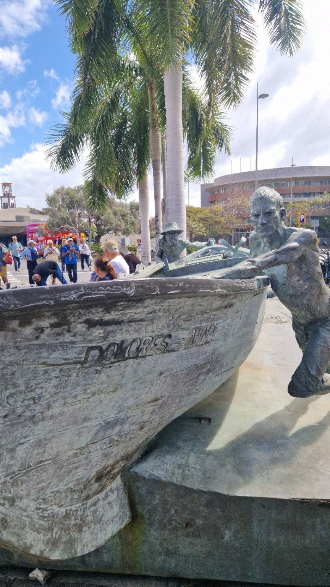
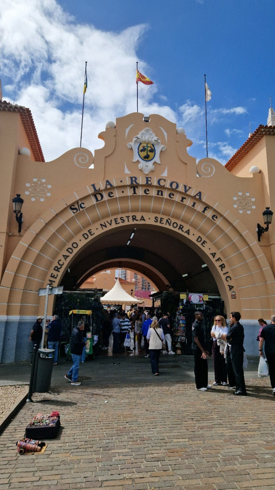
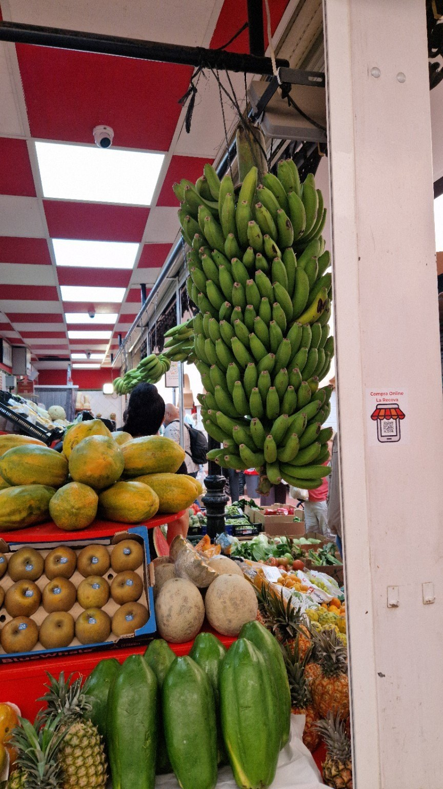
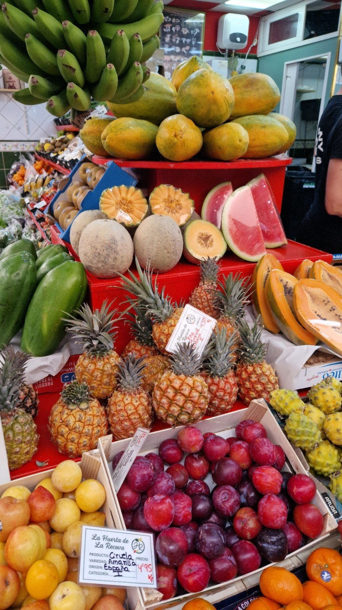
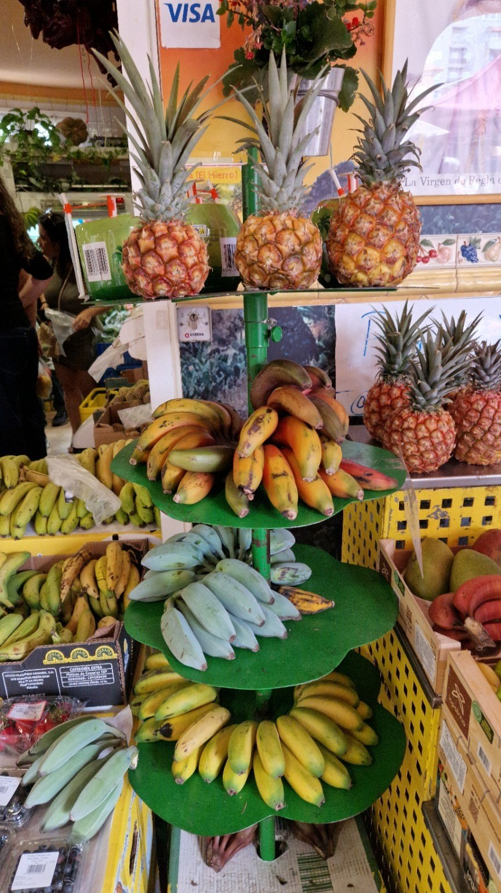
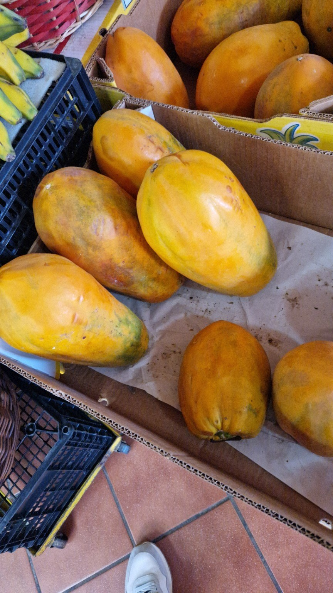
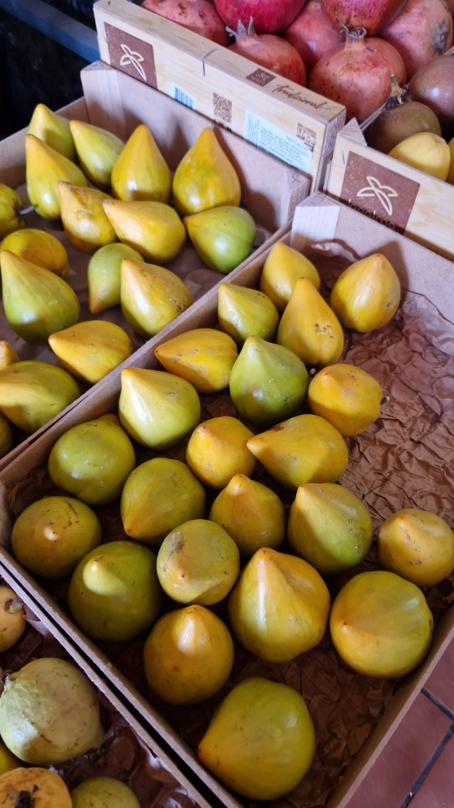
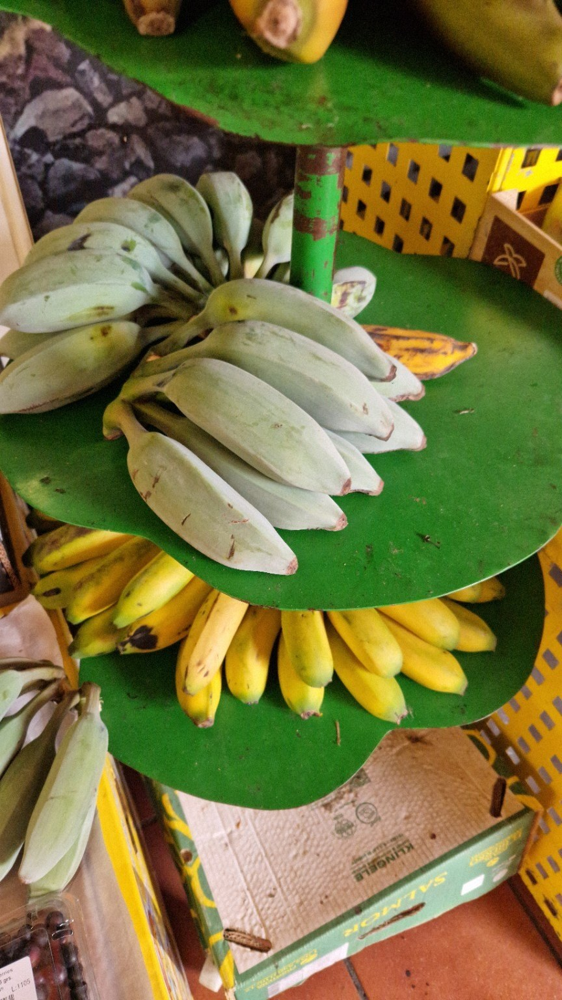

In front of the market, two bronze fishermen push a boat toward the water. Their gesture preserves the memory of an island that, long before hotels, promenades, and holidays, lived for a long time in close relationship with the sea.

A few steps away, the market’s great arch gathers people toward the entrance. The name La Recova stands above the gate, and beyond it another world begins: stalls, voices, movement, and colour. The transition feels natural, almost cinematic — from the boat being pushed toward the sea to the fruit brought to market.

Inside, the first impression does not come from a single smell or a single colour. It comes from abundance. The fruit is stacked, hanging, cut open, or left to ripen in full view. Papayas lean against one another, pineapples lift their leaves above the crates, and bananas occupy the space almost like a living architecture.

Colour is not decoration
In many tourist places, colour is used as a promise. Here, it does not seem prepared for photography. It simply exists. The green of the bananas, the orange of the papaya, the red of the tomatoes and plums, the yellow of the pineapple — all of them meet without being arranged for the gaze of whoever walks in.
The stalls are compact, sometimes almost crowded. The crates remain visible, the labels are not always perfect, and the fruit does not all have the same shape. It is precisely this lack of staging that gives the market its truth.

Bananas and time
At the same stall, you see bananas that are very green, yellow, speckled, or almost fully ripe. In the supermarket, fruit often seems to have arrived on the same day. In the market, time remains visible.
Some are for today. Others are for the days ahead. The ripest ones are not hidden, and the green ones are not rushed. Differences in colour and texture quietly say that a good fruit is not an identical object repeated over and over.

Perhaps that is why a market changes the way you look at food. You no longer see only the final product. You see waiting. You see the moment when something is almost ready and must be allowed to arrive there on its own.
Papaya and star fruit
At La Recova, I did not stop only to look. I tasted papaya and star fruit. The papaya was soft, sweet, and beautifully ripe, with that texture that seems to melt before you fully understand its flavour.
The star fruit was different. It had an exotic, fresh taste, with a lightly citrus note, somewhat close to lemon. It was not an overpowering sweetness, but rather a flavour that lingered and made you want to try another piece.
Two very different fruits, yet eaten there they seemed naturally to belong to the same place. Not because they were necessarily rare, but because the market gave them context: the climate, the closeness to the soil, the slow rhythm of ripening, and the simple gesture of choosing them.

The imperfection that inspires trust
Some fruit shows spots. Others have uneven skin, different shapes, or marks that would never easily pass the filter of an advertisement. Nothing seems hidden.
It is not carelessness. It is a form of honesty. The fruit is there to be touched, smelled, compared, and bought. The market does not ask it to look flawless. It only asks it to be good.

In a world where everything arrives quickly cleaned, packaged, and ordered, La Recova keeps something essential: the freedom of things not to look identical.
A market that does not perform
Around the stalls, people choose, ask questions, touch the fruit, and wait. Crates are moved, produce is weighed, payments are made. No one seems to perform authenticity for visitors.
This may be the most important difference between a living market and a setting built for tourists. La Recova keeps functioning even when you are not photographing it. People come for ordinary things. That is exactly why, for someone arriving from outside, the place says so much.
Sometimes a city begins to feel true only when you see its people buying the things of everyday life.
Tenerife seen up close
Tenerife is often seen from above: from roads that climb into the clouds, from cliffs, from the rim of a crater, or from a panoramic viewpoint. At La Recova, the island is seen up close.
You see it in the skin of a papaya, in the green of a banana that still needs time, in the pineapple placed beside tomatoes, and in the hand of someone choosing fruit to take home. It is not a grand image, but it is one that stays with you.
A market does not explain an island to you. It does, however, offer a form of closeness. It makes you notice the climate without reading about it, the soil without seeing it cultivated, and the habits without needing a list.
What you take with you
I left La Recova with the taste of papaya and star fruit still fresh and with the feeling that I had seen a part of Tenerife that the beach cannot show.
It was not a spectacular discovery. That is exactly why it mattered. Some places offer you a view. Others change, for a little while, the taste of a day.

La Recova belongs to the second category.